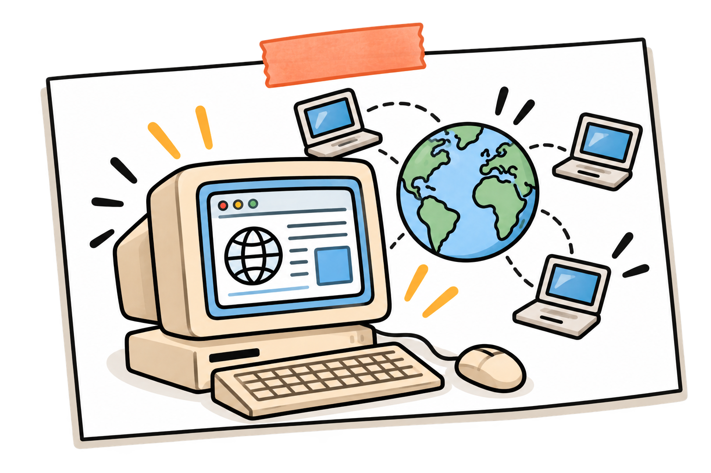
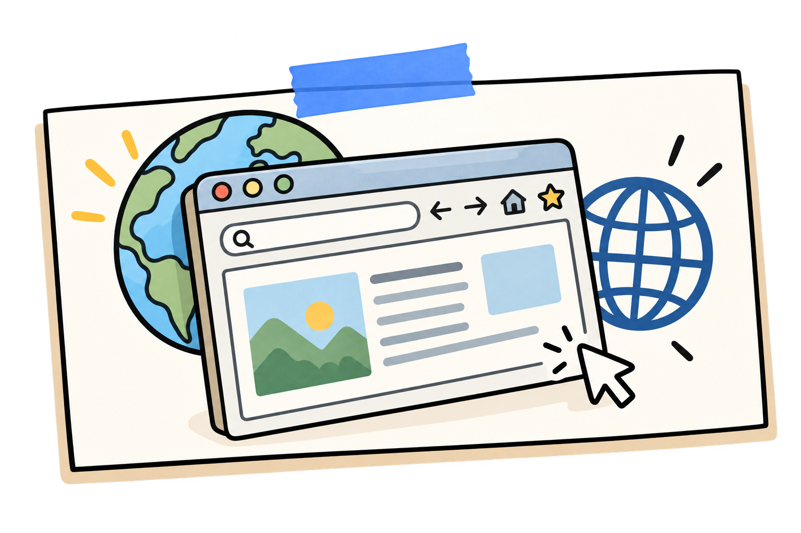
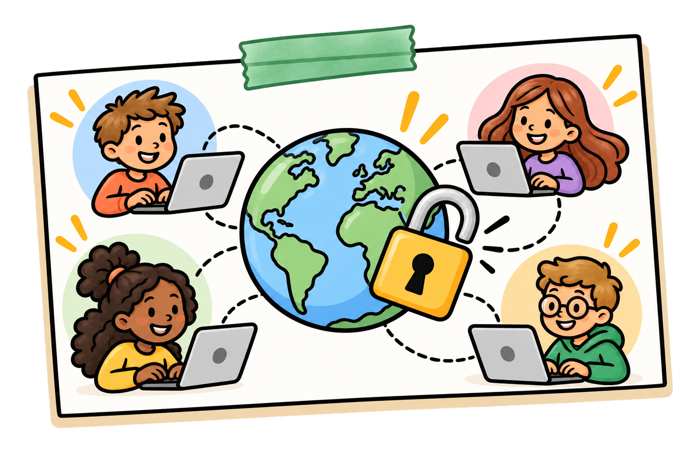
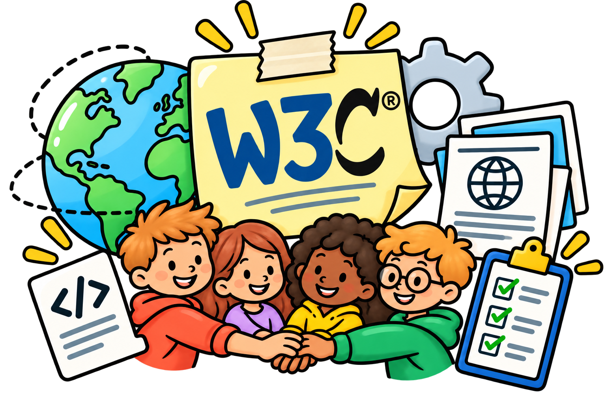
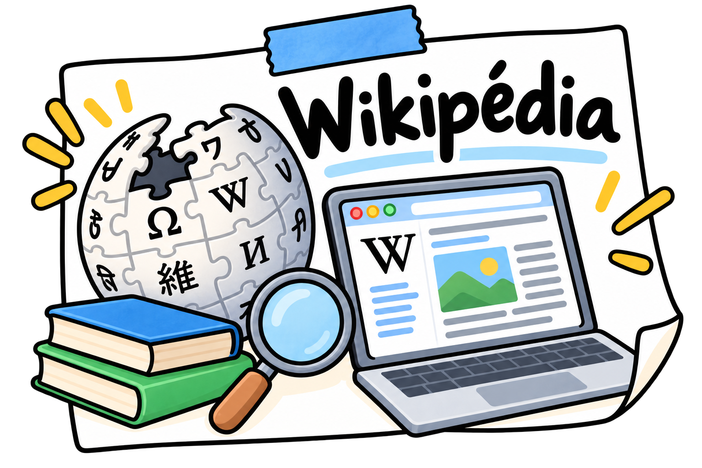
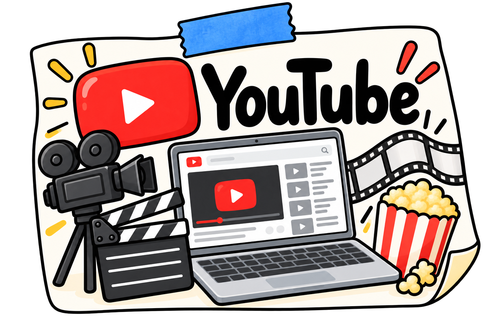

Timeline du Web
Le Web n'a pas toujours existé. Voici les grandes dates qui l'ont construit.
Les grandes dates
-
1989
La création du web
Au départ, son objectif était de mettre au point un outil à l'aide duquel les scientifiques pourraient partager facilement les données de leurs expériences

-
1990
Les premiers navigateur web
Les premiers navigateurs web, ont ouvert la voie à l'accès facile à l'information en ligne, marquant ainsi le début de l'ère de l'internet moderne.

-
1993
Le Web devient libre
La technologie est rendue publique, ce qui permet à tout le monde de l'utiliser.

-
1994
Création du W3C
Une organisation est créée pour définir des règles communes au Web.

-
1995
Arrivée de JavaScript
Les pages deviennent capables de réagir aux actions de la personne qui les visite.
-
2001
Wikipédia
Wikipédia a été lancée officiellement le 15 janvier 2001 pour soutenir Nupedia, un projet semblable mais écrit uniquement par des experts.

-
2005
Youtube
Il est créé en février 2005 par Steve Chen, Chad Hurley et Jawed Karim, trois anciens employés de PayPal.

Jeu : associe chaque date à son événement
Ce jeu a besoin de JavaScript pour fonctionner.